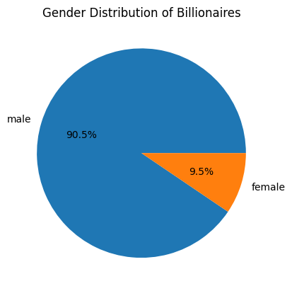

import requests
from bs4 import BeautifulSoup
import pandas as pd
import matplotlib.pyplot as plt
# Fetching billionaires dataset
site = "https://corgis-edu.github.io/corgis/csv/billionaires/"
page = requests.get(site)
soup = BeautifulSoup(page.content, "html.parser")
for link in soup.find_all("a"):
if link.has_attr("download"):
csv_link = site + link["href"]
break
billionaires_df = pd.read_csv(csv_link)
# Filter out billionaires with age <= 0 due to being a married couple
billionaires_df = billionaires_df[billionaires_df['demographics.age'] > 0]Understanding Billionaires
Hubert Chen (405299125) 3/20/23
Introduction
For my project, I will be analyzing information on billionaires worldwide. The dataset I will be using is from the CorGIS Dataset Project, and contains information on over 2,000 billionaires from various countries, along with details about their source of wealth, net worth, and industry. This project involves a thorough analysis of billionaires along with data visualizations to support my analysis. I will be analyzing billionaires across different factors, including gender, industry, country, and age to better understand how these factors play a role in creating billionaires.
There are several questions I aim to answer in this project:
- What are the top industries that billionaires are involved in, and how has this changed over time?
- How does the net worth of billionaires vary by industry, country, and gender?
- Are there any notable patterns or trends in the data that can help explain the distribution of wealth among billionaires?
Methods
The dataset can be found here: https://corgis-edu.github.io/corgis/csv/billionaires/
The dataset is stored as a comma-separate file format, which makes it easy to understand and analyze with Python. There are a total of 23 columns containing information such name, gender, age, source of wealth, industry, net worth. Overall, this dataset provides a thorough amount of information on billionaires to gain insight into the distribution and accumulation of wealth among individuals in different industries, countries, and demographics.
To analyze this dataset, I utilized the BeautifulSoup library to web scrape the billionaires dataset from CorGIS. Once loaded, the data can be cleaned and preprocessed to remove missing values or inconsistencies. For preprocessing, I removed all rows that contained an age that was less than or equal to 0 due to the status of the entry being a couple. This is to make the visualizations later on more understandable, especially when we plot net worth versus age. Following this, I revealed a sample of this dataset and summary statistics as a basis for understanding how the data is structured. Using the summary information, I was able to narrow down on the attributes for analysis such as industry, gender, and net worth.
The next step was to perform various statistical analyses and modeling techniques to uncover insights about the data. Through aggregating counts of rows with certain attributes and filtering to get the top results, I visualized the top factors and trends of billionaires in general. This was done to discover the dominant industries, distribution of net worth across age, countries, and gender. All visualizations were done using Matplotlib, featuring pie charts, bar charts, histograms, scatter plots and line graphs to show the relationships in the data.
Results
top_industries = billionaires_df['wealth.how.industry'].value_counts().nlargest(10)
plt.bar(x=top_industries.index, height=top_industries.values)
plt.xticks(rotation=90)
plt.title('Top Industries of Billionaires')
plt.xlabel('Industry')
plt.ylabel('Number of Billionaires')
plt.show()# Group billionaires by industry and year and count the number of billionaires
industry_year_counts = billionaires_df.groupby(['wealth.how.industry', 'year'])['name'].count().reset_index()
# Sort by year and count
industry_year_counts = industry_year_counts.sort_values(['year', 'name'], ascending=[True, False])
# Get top 10 industries for most recent year in the dataset
top_industries = industry_year_counts[industry_year_counts['year'] == 2014].head(10)['wealth.how.industry'].values
# Filter dataset to only include top industries for most recent year
top_industry_counts = industry_year_counts[industry_year_counts['wealth.how.industry'].isin(top_industries)]
plt.figure(figsize=(12,10))
for industry in top_industries:
plt.plot('year', 'name', data=top_industry_counts[top_industry_counts['wealth.how.industry'] == industry], label=industry)
plt.legend()
plt.title('Top Industries of Billionaires over Time')
plt.xlabel('Year')
plt.xlim([1996, 2014])
plt.ylabel('Number of Billionaires')
plt.show()
billionaires_df.plot.scatter(x='demographics.age', y='wealth.worth in billions')
plt.title('Net Worth vs. Age among Billionaires')
plt.xlabel('Age')
plt.ylabel('Net Worth (in billions)')
plt.show()top_10_countries = billionaires_df['location.country code'].value_counts().head(10)
plt.figure(figsize=(10,5))
plt.bar(top_10_countries.index, top_10_countries.values)
plt.title('Top 10 Countries with the Most Billionaires')
plt.xlabel('Country')
plt.ylabel('Number of Billionaires')
plt.show()
gender_counts = billionaires_df['demographics.gender'].value_counts()
plt.pie(x=gender_counts.values, labels=gender_counts.index, autopct='%1.1f%%')
plt.title('Gender Distribution of Billionaires')
plt.show()
The data analysis reveals some interesting findings regarding billionaires and their industries, location, and age. The bar chart of top industries shows that consumer is the top industry for billionaires, followed by real estate, retail, and restaurants. This suggests that these industries offer significant opportunities for wealth accumulation. Likewise, industries like non-consumer industrial, technology-medical, and energy had the fewest billionaires.
The line chart of top industries over time shows that consumer has consistently been the top industry for billionaires, but there have been some changes in other industries. For example, real estate was the fifth top industry for billionaires in 1996 but became the second top industry by 2006. On the other hand, money management was the second top industry for billionaires in 1996 but fell to the sixth top industry by 2006. For industries like non-consumer industrial, technology-medical, and energy, they had the fewest billionaires throughout 1996 to 2004. This suggests that these industries are growing slower than the top industries.
The scatter plot of net worth vs. age shows that there is a positive correlation between age and net worth, with older billionaires generally having higher net worths than their younger counterparts. This suggests that wealth accumulation takes significant time. In addition, it shows that billionaires gain even more wealth as they get older.
The bar chart of top countries with the most billionaires shows that the United States has by far the most billionaires, followed by China, Denmark, and Russia. This suggests that wealth is concentrated in certain countries, and there may be cultural and economic factors that contribute to this trend. India, France, and Great Britain had the fewest billionaires but had roughly the same amount of billionaires as Brazil, Hong Kong, and Japan. A surprising observation was that the United States had as many billionaires as the next five countries combined.
Overall, this data analysis reveals some important trends and patterns in the distribution of wealth among billionaires, and it highlights the importance that industry, age, location, and culture play in the status of billionaires.
Discussion
The data analysis and visualizations above can be extrapolated to answer the research questions stated in the introduction. Firstly, the industries that reap the most billionaires changes over time, even within the span of a decade. However, there are industries that consistently produce billionaires like consumer industries, while other industries like education are left out. Industries like consumer ones make it possible for single individuals to amass vast wealth, suggesting that new policies and regulation could help to distribute wealth more equitably in these industries.
Secondly, a predominant characteristic of billionaires is being male past the age of 40. This suggests that becoming a billionaire takes a significant amount of time to build wealth. Females are poorly represented in the billionaires group, suggesting females are disadvantaged in joining the wealthiest group. Gender discrimination plays a role in this by limiting opportunities for advancement, capital, and higher pay. Furthermore, gender stereotypes can make it hard for women to pursue business and entrepreneurial ventures, which is how the wealthy earn their wealth. Addressing these issues requires changing policy and cultural perspectives to increase opportunities for women to advance in whatever industry they desire.
Additionally, the United States consistently produces the most billionaires, followed by China, Denmark, and Russia. Notably, these countries are among the most developed in the world and can provide the resources needed for billionaires to be created. These countries have among the largest economies and foster entrepreneurship and innovation. These are key ingredients for businesses to start, grow, and succeed, which allows new billionaires to arise. Also, these countries likely have laws, tax environments, and regulations that encourage business owners to conduct business in these countries. Thus, by living and working in one of these countries, an individual is more likely to accumulate extreme levels of wealth than in other countries.
These findings highlight key characteristics of billionaires. From this, investors and entrepreneurs can identify important industries that are likely to generate wealth. In addition, the public can better understand how billionaires affect their respective industries. This is particularly important in addressing issues such as wealth inequality, philanthropy, and the relationship between business and society. Lastly, as an individual, knowing that becoming a billionaire takes significant time can help them to gain motivation to work for the long run. Overall, these findings are useful for the general good of the people.
In conclusion, I was able to find commond trends and factors in billionaires using the CorGIS dataset. Hopefully, these insights can help to raise public awareness and lead towards a more equitable society.